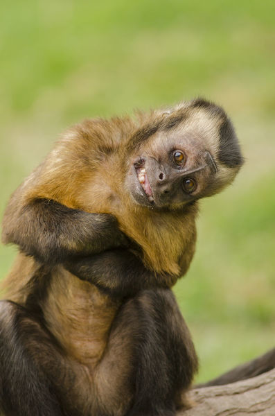
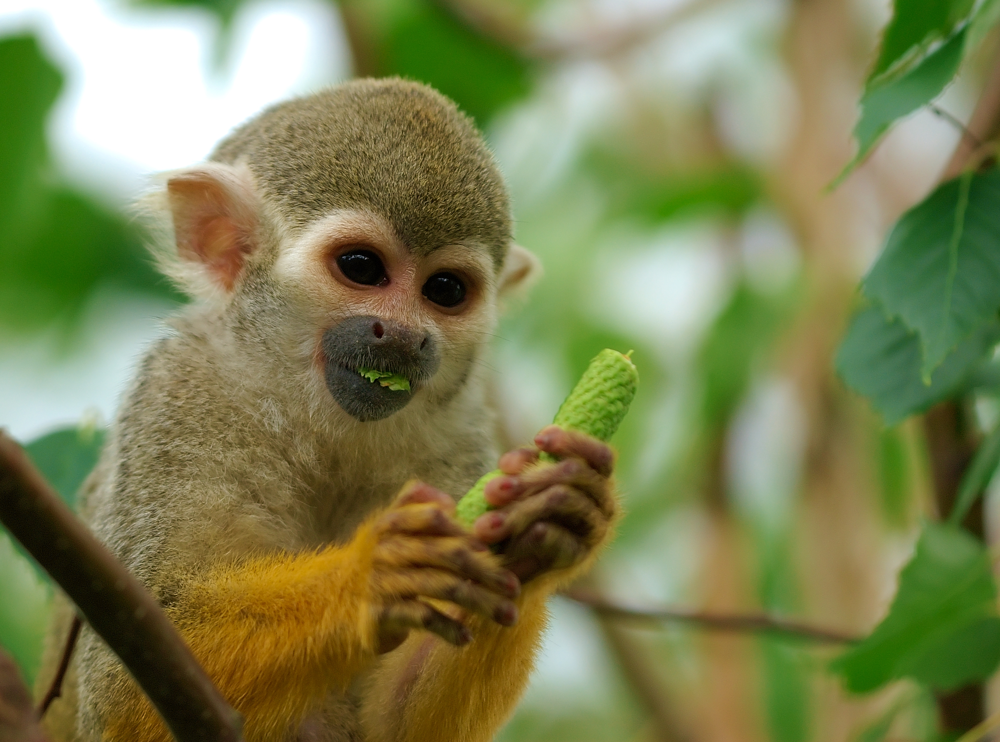
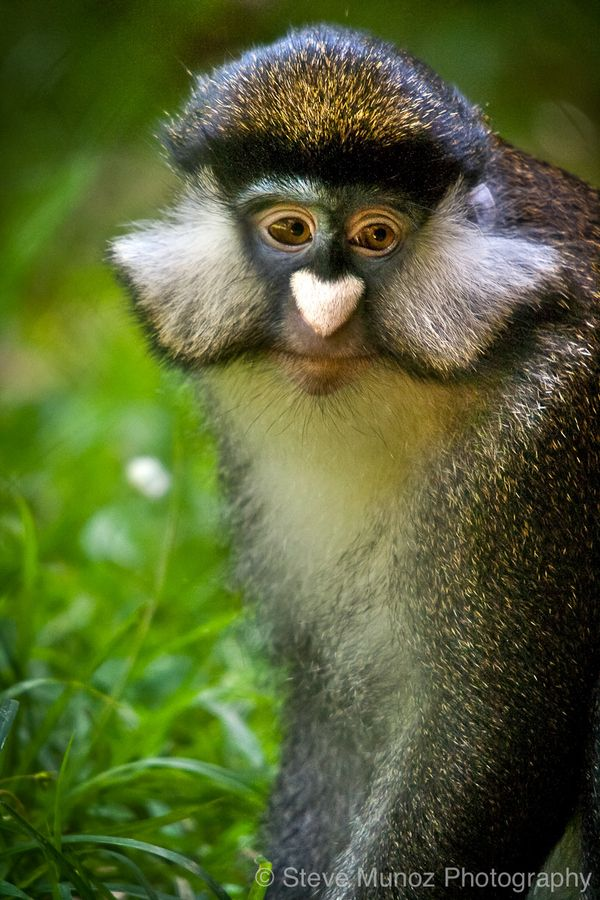
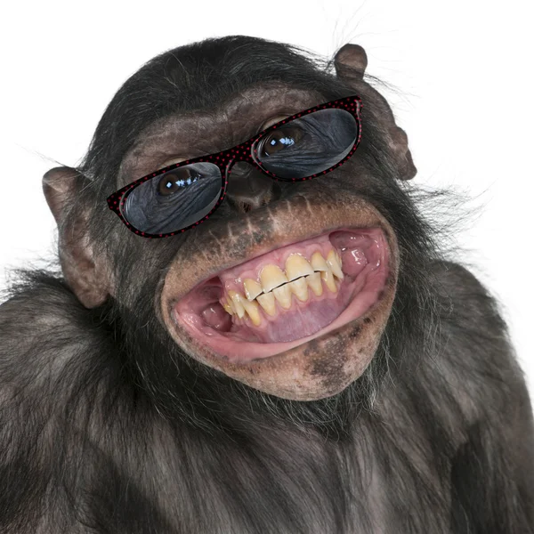

A continuacion, una lista de los monos que ofrecemos en nuestra tienda incluyendo una “preview” para hacer mas fácil su elección de compra😊:
- Capuchin 
- Macaque
- Squirrel Monkey 
- Guenon 
- Chimpanzee 

En Monito Libre™, te ofrecemos lo mejor en mascotas antropoides!.
Los días de comprar tu mono-mascota de forma ilegal han terminado, aca te ofrecemos no solo una gran variedad de ellos, sino que completamente legal y listo para acompañarte!.
A continuacion, una lista de los monos que ofrecemos en nuestra tienda incluyendo una “preview” para hacer mas fácil su elección de compra😊:
Si por alguna razón, usted no es de los que se van por los looks y
necesita características especificas (lo cual seria raro),
aquí le presentamos descubrimientos cientificos sobre monos,
realizados por Monito Libre™!
| Marca | Expiration Date | Length | Weight | Habitat | ✨Cuteness Level (1 - 10)✨ |
|---|---|---|---|---|---|
| Capuchin | 15 - 25 years | 30 - 56 cm | 1.4 - 4 kg | Argentina, Brazil | 10 |
| Macaque | 20 - 30 years | 41 - 70 cm | 5.3 - 7.7 kg | Southeast Asia, Sri Lanka | 8 |
| Squirrel Monkey | 15 - 20 years | 25 - 42 cm | 750 - 950 g | Brazil, Colombia, Ecuador | 7 |
| Guenon | 15 - 20 years | 45 - 48 cm | 3.3 kg | Zaire, Uganda | 0 🤮 |
| Chimpanzee | 32 - 39 years | 63 – 94 cm | 40 - 60 kg | Congo, Cameroon, and Gabon | 4 |